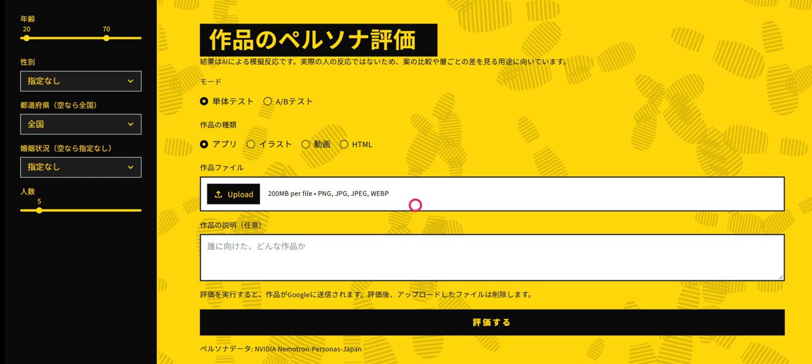
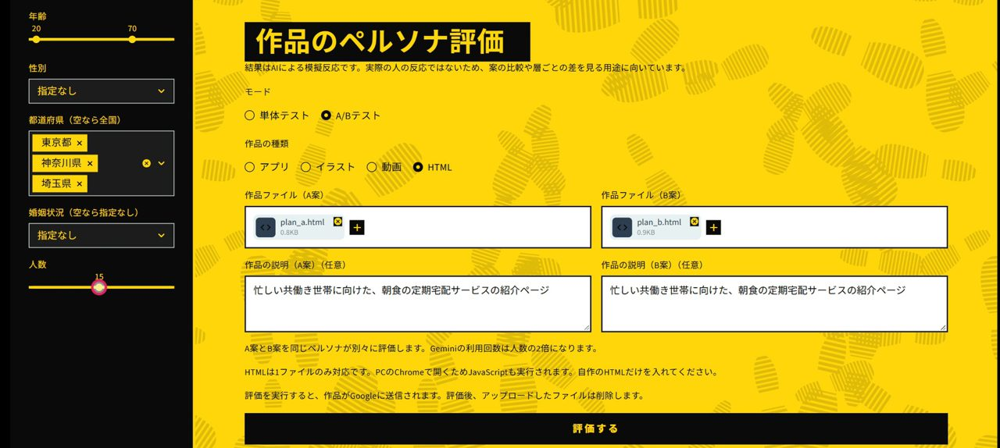
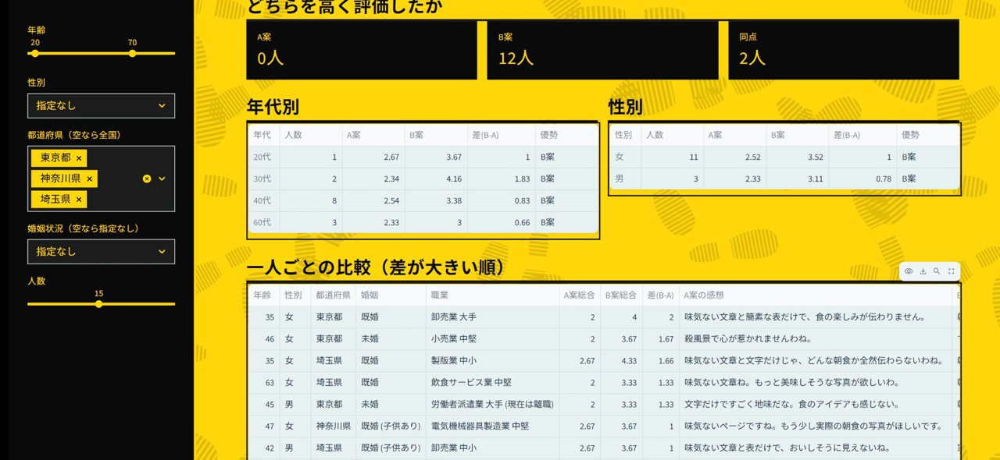
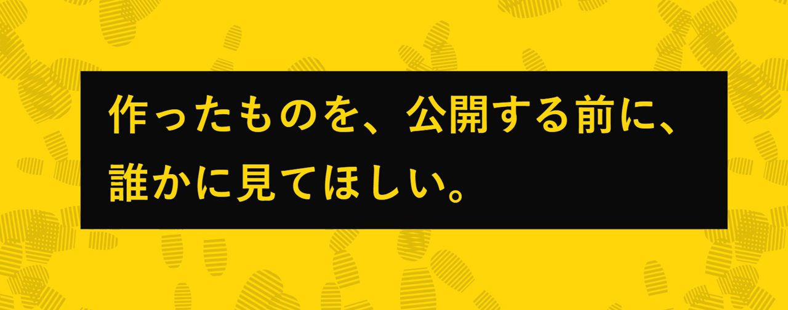

0票
Your Persona
個人の開発者でリリース前のHUTなどが実施できない人向けに、実際の統計に基づいた日本人の大規模データセットを活用し、疑似的にA/Bテストなどを行えるシステムです。
AI講評
講評準備中




個人の開発者でリリース前のHUTなどが実施できない人向けに、実際の統計に基づいた日本人の大規模データセットを活用し、疑似的にA/Bテストなどを行えるシステムです。
講評準備中



